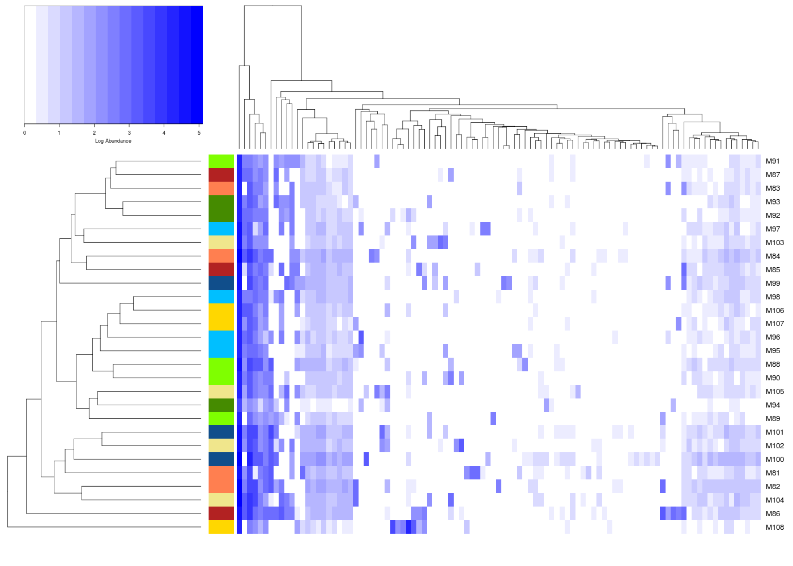
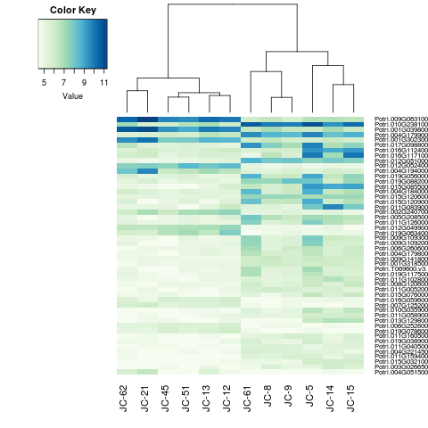
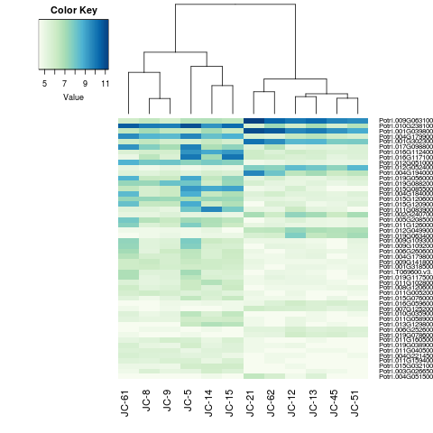

|
Using the phyloseq function plot_tree:plot_tree(ps, ladderize="left", color="Treatment", size='abundance') + coord_polar(theta="y") +
guides(color = guide_legend(override.aes = list(size=5))) + scale_color_brewer(palette = 'Dark2')
|
|  |
This heatmap shows abundance of taxa for each sample, while giving group colors on the left. This presumes you have the data in a phyloseq object called ps.
library(phyloseq)
library(gplots)
library(RColorBrewer)
otu <- as.matrix(otu_table(ps))
otu <- log10((otu + 1))
bw <- colorRampPalette(c('white','blue'))
# The metadata has a column called Color
# The metadata should be in the same order as the otu table.
# Phyloseq preserves order, so this should happen automatically.
meta <- read.table('metadata.txt', header=T, stringsAsFactors = F)
heatmap.2(otu, trace="none", col = bw, margin=c(6, 6), density.info = 'none',
RowSideColors = meta$Color, labCol=F, key.title=NA,
key.xlab='Log Abundance', cexRow = 1.7)
|
|  |
Here I wanted the clustering for the columns to be the same, but I wanted the group on the left to be on the right.
library(gplots)
library(RColorBrewer)
hmcol <- colorRampPalette(brewer.pal(9, "GnBu"))(100)
# m is a matrix of values
# Heatmap as originally plotted:
heatmap.2(m, col=hmcol, dendrogram='column', trace='none', margin=c(5,6),
density.info='none', Rowv=F)
# I construct the dendrogram outside the heatmap call,
# and then play with the weights some so that a reording gives me what I want
# heatmap.2 is then called with the dendrogram specified.
hc <- hclust(dist(t(m)))
asDD <- as.dendrogram(hc)
weights.dd <- ifelse(colnames(m) == "JC-61", yes = 1, no = 50) +
ifelse(colnames(m) == "JC-51", yes = 950, no = 0)
dd.reordered <- reorder(asDD, wts=weights.dd, agglo.FUN=mean)
heatmap.2(m, col=hmcol, dendrogram='column', trace='none', margin=c(5,6),
density.info='none', Colv=dd.reordered, Rowv=F)
|